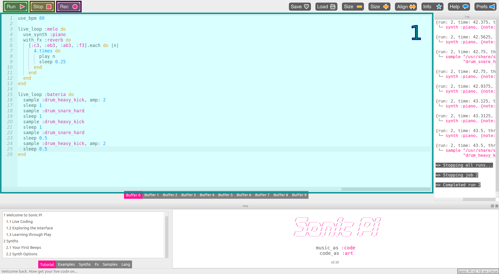
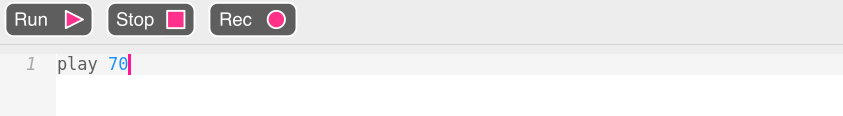
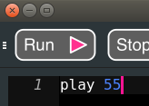
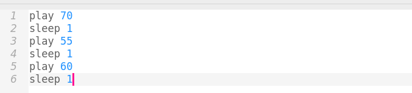
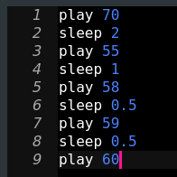
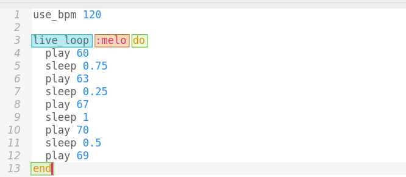

Taller de programación musical
Semana de la computación

¿Esto es una canción?

¿Y esto?

¿Y esto?
¿Que tienen en común el código y la partitura?
Son instrucciones de cómo y cuándo hacer qué sonidos.
¿Porque el código (ese texto de colores) produce música?
Porque el código es una manera de darle instrucciomes a la computadora. En este caso, producir sonidos.
En las canciones las notas tienen dos cualidades principales:
- Altura (si es aguda o grave)
- Tiempo (cuando suena)
Altura
En la computadora la altura se pueden representar con números.

|

|
|---|
Las canciones se rigen por un pulso base. El pulso nos sirve para entender cuando suena cada sonido.
Los sonidos no siempre suenan en todos los pulsos.
También puedo tener más de un sonido por pulso.
O muchos más.
¡Manos a la obra!
Ahora es su turno de aprender a decirle a la computadora que haga sonar música.
Sonic-pi
Reproduciendo Notas



Ejercicio: hacer sonar 3 notas distintas al mismo tiempo
¡Esperame!
La instrucción sleep 1 le dice a la computadora que espere 1 pulso.
El número al lado de sleep puede tener otros valores.
¿Cómo suena esto? 
Ejercicio: escribir una melodía con tiempos variables
¡Más rápido!
En la música se habla de los "pulso por minuto" (se le dice bpm) de una canción. Los "pulsos por minuto" nos dicen que tan seguido suena casa pulso. A más pulsos por minuto más rápido suena. use_bpm 120 le pide a la computadora que tenga 120 pulsos por minuto.

Ejercicio: probar haciendo sonar su canción a distintas velocidades.
Recordatorio: cada vez que apretan "Run" la computadora usa el código como está escrito.¡Otra vez!
Un ciclo en programación le pide a la computadora que repita algo. En nuestro caso, significa que se repite la melodía.
Para eso usamos live_loop para rodear el código que se repite. "Loop" significa ciclo.
Ejercicio: encerrar a su melodía en un live_loop, ponerle nombre y ver como se repite.
Recordatorio: el botón "Stop" para la música. Si apreto "Run" actualiza el sonido a lo que está escrito.Samples
Un sample es un pedacito de grabación corta. Sirve para agregar cosas nuevas a una canción. Por eso los DJ hoy usan computadoras. Sonic-pi tiene muchos samples. Por ejemplo:- sample :ambi_lunar_land
- sample :bass_hard_c
- sample :elec_blup
Ejercicio: incluir samples en su melodía
Recordar que los samples tienen una duración y hay que decirle a la computadora que espere después de hacerlo sonar.Batería
En sonic-pi también hay sonidos de batería.
Ejercicio: usando sample y sleep, hacer sonar la base de rock. Para eso hacer sonar cada sample en el beat indicado en color.